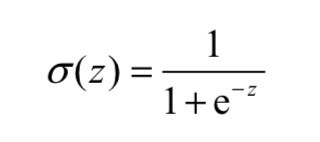
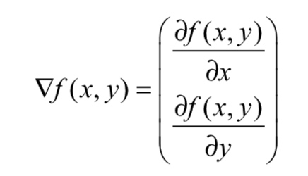
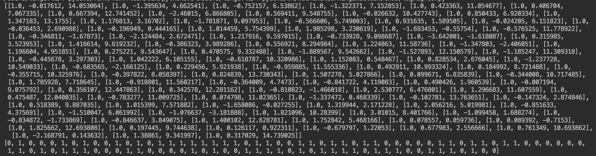
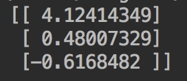
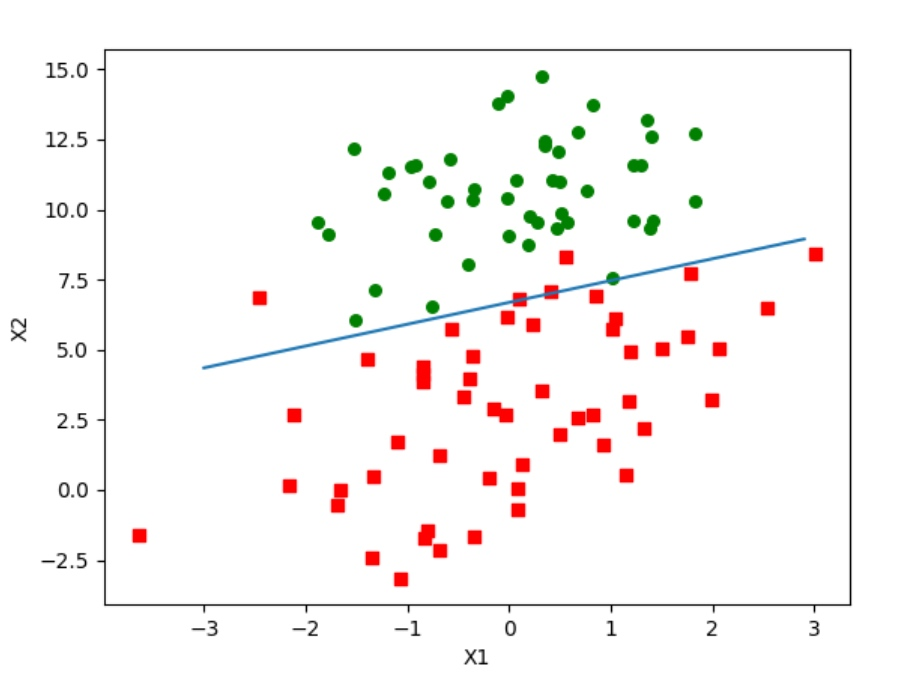
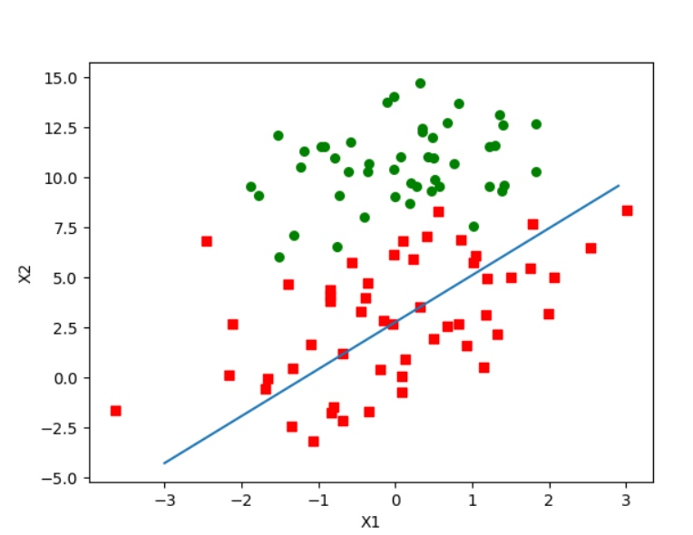
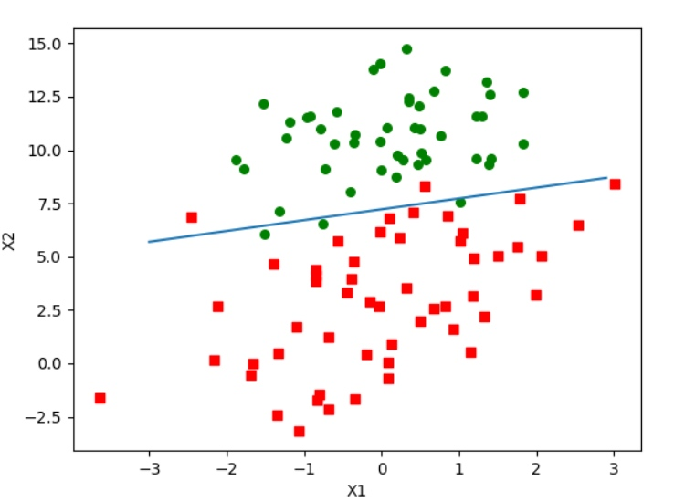
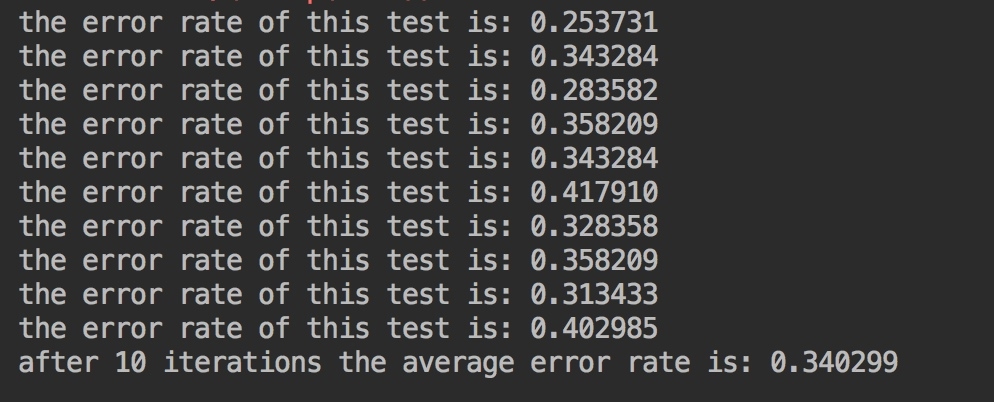

在每个特征上都乘以一个回归系数，然后把 所有的结果值相加，将这个总和代入Sigmoid函数中，进而得到一个范围在0~1之间的数值。任 何大于0.5的数据被分入1类，小于0.5即被归入0类
0x01 LR
根据现有数据对分类边界线建立回归公式，以此进行分类
LR的目的是寻找一个非线性函数Sigmoid的最佳拟合参数，求解过程可以由最优化 算法来完成
在最优化算法中，最常用的就是梯度上升算法，而梯度上升算法又可以简化为随机梯度上升算法
优点
- 计算代价不高
- 易于理解和实现
缺点
- 容易欠拟合
- 分类精度可能不高
适用数据类型
- 数值型
- 标称型
类阶跃函数：Sigmoid函数

LR分类器：在每个特征上都乘以一个回归系数，然后把 所有的结果值相加，将这个总和代入Sigmoid函数中，进而得到一个范围在0~1之间的数值。任 何大于0.5的数据被分入1类，小于0.5即被归入0类
0x02 训练算法
确定回归系数
- 梯度上升法
要找到某函数的 最大值，最好的方法是沿着该函数的梯度方向探寻

- 训练数据

def sigmoid(inX):
'''
sigmoid函数
:param inX:
:return:
'''
return 1.0/(1+exp(-inX))
def gradAscent(dataMatIn, classLabels):
'''
梯度上升优化算法
:param dataMatIn:
:param classLabels:
:return:
'''
dataMatrix = mat(dataMatIn) #转换为numpy矩阵数据类型
labelMat = mat(classLabels).transpose()
m, n = shape(dataMatrix)
alpha = 0.001 #步长
maxCycles = 500 #迭代次数
weights = ones((n, 1))
for k in range(maxCycles):
#计算真实类别与预测类别的差值
h = sigmoid(dataMatrix*weights) #矩阵相乘
error = (labelMat - h) #向量相减
weights = weights + alpha * dataMatrix.transpose() * error #矩阵相乘
return weights

- 分析数据
def plotBestFit(weights):
'''
import matplotlib.pyplot as plt
画出决策边界
:param weights:
:return:
'''
dataMat, labelMat=loadDataSet()
dataArr = array(dataMat)
n = shape(dataArr)[0]
xcord1 = []
ycord1 = []
xcord2 = []
ycord2 = []
for i in range(n):
if int(labelMat[i]) == 1:
xcord1.append(dataArr[i, 1])
ycord1.append(dataArr[i, 2])
else:
xcord2.append(dataArr[i, 1])
ycord2.append(dataArr[i, 2])
fig = plt.figure()
ax = fig.add_subplot(111)
ax.scatter(xcord1, ycord1, s=30, c='red', marker='s')
ax.scatter(xcord2, ycord2, s=30, c='green')
x = arange(-3.0, 3.0, 0.1)
y = (-weights[0]-weights[1]*x)/weights[2] #设置sigmiod为0
ax.plot(x, y)
plt.xlabel('X1')
plt.ylabel('X2')
plt.show()
plotBestFit(weights.getA()) #getA()函数与mat()函数的功能相反，将一个numpy矩阵转换为数组

- 随机梯度上升算法
在线学习算法
一次仅用一个样本点来更新回归系数
def stocGradAscent0(dataMatrix, classLabels):
'''
随机梯度上升算法
:param dataMatrix:
:param classLabels:
:return:
'''
m, n = shape(dataMatrix)
alpha = 0.01
weights = ones(n) #初始化
for i in range(m):
h = sigmoid(sum(dataMatrix[i]*weights))
error = classLabels[i] - h
weights = weights + alpha * error * dataMatrix[i]
return weights

- 改进的随机梯度上升算法
def stocGradAscent1(dataMatrix, classLabels, numIter=150):
'''
改进的随机梯度上升算法
:param dataMatrix:
:param classLabels:
:param numIter:默认迭代次数
:return:
'''
m, n = shape(dataMatrix)
weights = ones(n)
for j in range(numIter):
dataIndex = list(range(m))
for i in range(m):
alpha = 4/(1.0+j+i)+0.0001 #每次迭代进行调整，不断减小
randIndex = int(random.uniform(0, len(dataIndex))) #随机选择样本更新回归系数
h = sigmoid(sum(dataMatrix[randIndex]*weights))
error = classLabels[randIndex] - h
weights = weights + alpha * error * dataMatrix[randIndex]
del(dataIndex[randIndex])
return weights

0x03 实例1
- 准备数据
如何处理数据中的缺失值？
1.使用可用特征的均值来填补缺失值
2.使用特殊值来填补缺失值
3.忽略有缺失值的样本
4.使用相似样本的均值添补缺失值
5.使用另外的机器学习算法预测缺失值
- 测试算法
def classifyVector(inX, weights):
'''
:param inX: 回归系数
:param weights: 特征向量
:return: 0 or 1
'''
prob = sigmoid(sum(inX*weights))
if prob > 0.5:
return 1.0
else:
return 0.0
def colicTest():
frTrain = open('horseColicTraining.txt')
frTest = open('horseColicTest.txt')
trainingSet = []
trainingLabels = []
for line in frTrain.readlines():
currLine = line.strip().split('\t')
lineArr = []
for i in range(21):
lineArr.append(float(currLine[i]))
trainingSet.append(lineArr)
trainingLabels.append(float(currLine[21]))
trainWeights = stocGradAscent1(array(trainingSet), trainingLabels, 1000) #计算回归系数向量，迭代1000次
errorCount = 0
numTestVec = 0.0
for line in frTest.readlines(): #导入测试集计算分类错误率
numTestVec += 1.0
currLine = line.strip().split('\t')
lineArr = []
for i in range(21):
lineArr.append(float(currLine[i]))
if int(classifyVector(array(lineArr), trainWeights)) != int(currLine[21]):
errorCount += 1
errorRate = (float(errorCount)/numTestVec)
print("the error rate of this test is: %f" % errorRate)
return errorRate
def multiTest():
numTests = 10
errorSum=0.0
for k in range(numTests): # 计算10次求平均值
errorSum += colicTest()
print("after %d iterations the average error rate is: %f" % (numTests, errorSum/float(numTests)))

参考
[1] https://www.manning.com/books/machine-learning-in-action
本文由 B1ueB0ne
创作，采用 知识共享署名4.0 国际许可协议进行许可
本站文章除注明转载/出处外，均为本站原创或翻译，转载前请务必署名
最后编辑时间为: 2018-09-18T23:31:28+08:00